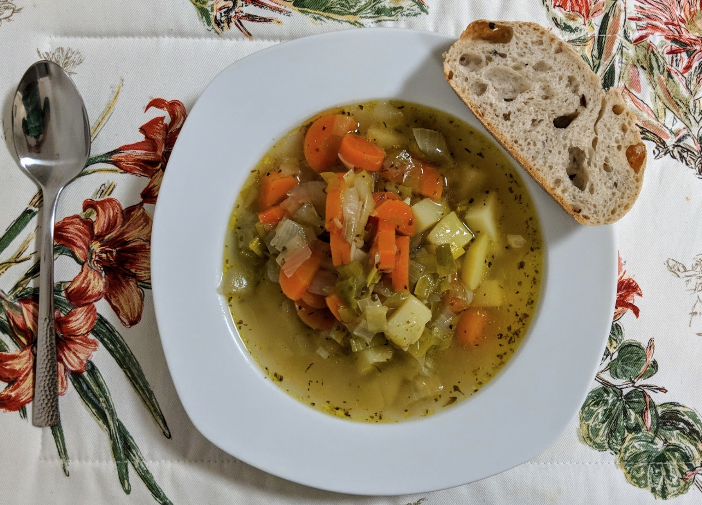

Leek and potato soup
Veggie goodness.

Ingredients
- 2 onions, chopped
- 2 large carrots, chopped
- 2 sticks of celery, chopped
- 2 garlic cloves
- 400g of leeks, quartered lengthways and diced
- 400g potatoes
- 2 chicken stock cubes
- Black pepper to taste
- Mixed herbs
- Chop the onions, carrots, celery, leeks, and garlic.
Be sure to quarter the leeks length-ways, then dice.
Fry up all the veggies in oil.
- Peel the potatoes and cut into 1cm cubes.
- Make stock using about 1.8 litres of water, and add to vegetables.
- Then add potatoes and bring to the boil. Simmer for 10 minutes with the lid on, and season to
taste.
Serves 6.
Inspired by this
recipe.